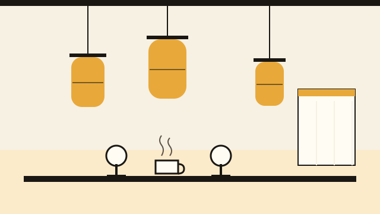
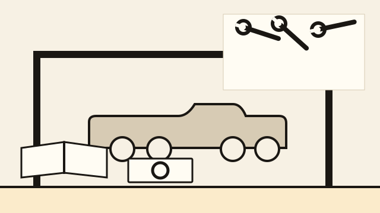
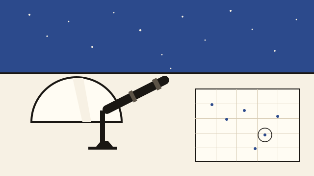
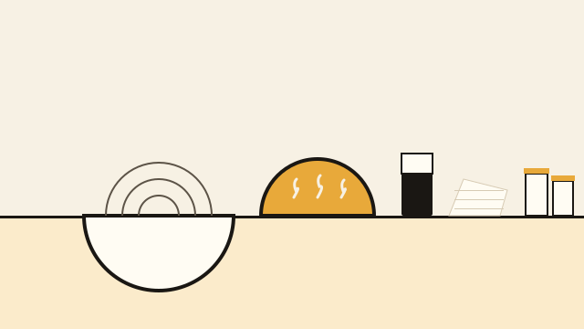

GM-013 subject-world reference boards
Host-composed from contracts/cb.tokens.v2.json. No model call, no stock art, no text in a plate. Plates are orientation only.
Japanese L0 — lantern district / cafe

field_atlas (lantern variant). Lantern with ink cap and rib; counter and stools; noren; cup and steam.
Head gasket — service bay / workshop manual

workshop_manual. Lift and crossbeam; tool wall; component tray with gasket ring; blank manual. No torque or sequence.
Astronomy — observatory

observatory. Dome slit and telescope; plotted chart; horizon. The chart is decorative, never a measurement.
Sourdough — kitchen table

kitchen_table. Banneton coils; scored dough; scraper; linen and jars. No temperature or recipe value.
Anti-generic swap check

The same composition with the subject swapped. If plate B still reads as Japanese, the plate is rejected.